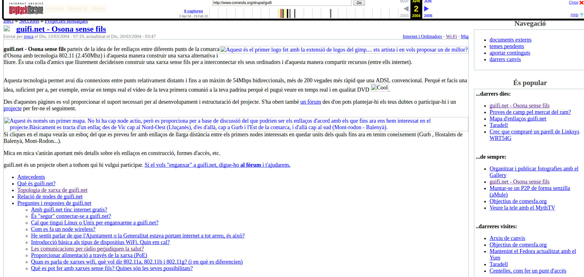
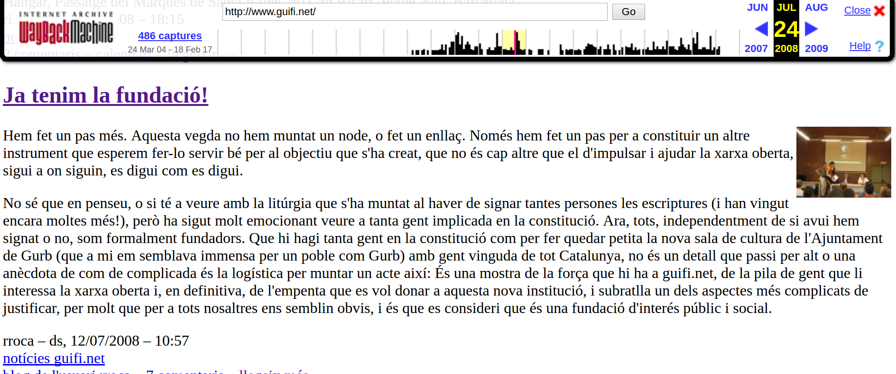
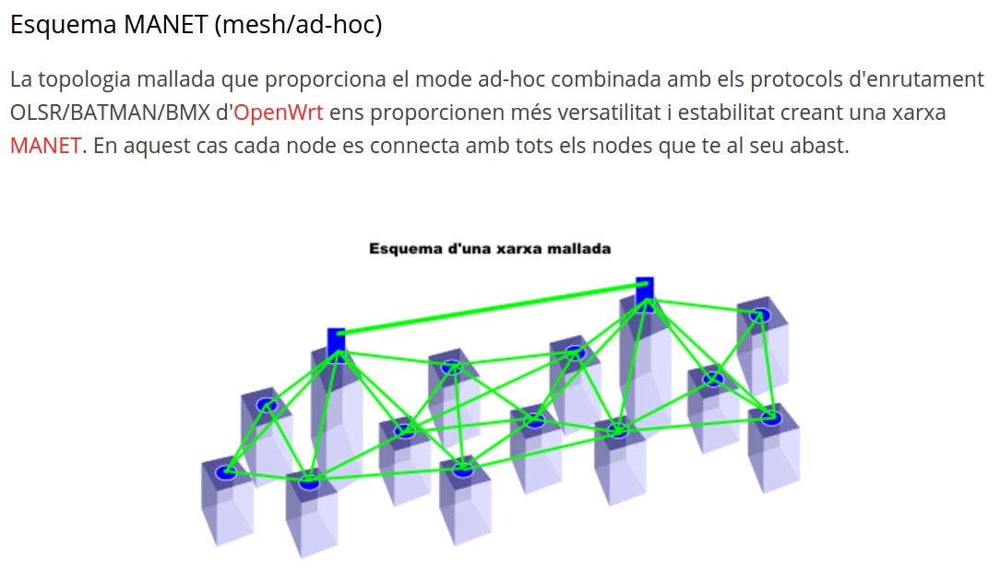
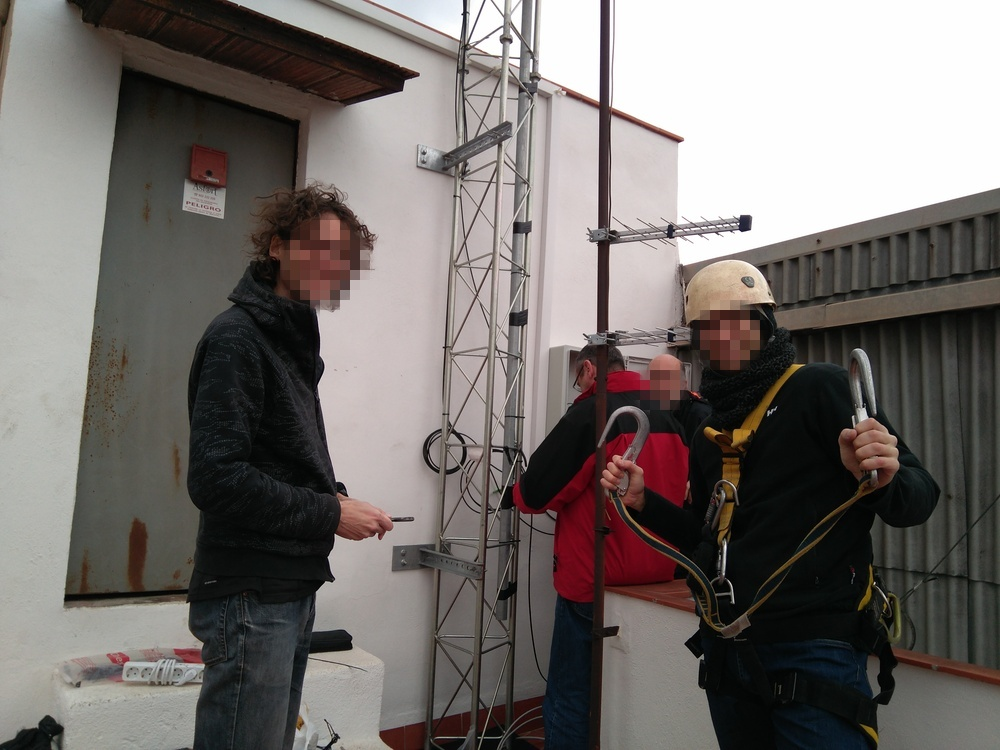

Desmitificant Guifi·net
Xarxa Oberta Lliure i Neutral
Guifipedro & The Rookies Crew
2004...

El primer nadó de guifi!
2008...

Fundació Guifi·net per blindar la xarxa
La Xarxa de Comuns no es pot comprar
2012...

Arriba la mesh, arriba la fibra
2016
SAX!
2017

Guifi·net avui *

* 26/02/2017
Casos d'èxit
- Supernodes (Osona, Lluçanès...) - Malla urbana (_mesh_ Sants) - Fibra (xafogar, La Garrotxa)
#1 Supernodes i estrelles (Osona, Lluçanès)
[Alternativa de connexió als territoris on els operadors no volen invertir](http://larella.vilaweb.cat/noticies/moltes-zones-del-llucanes-nomes-es-poden-connectar-a-internet-a-traves-de-guifi-net/)
[Xarxa en estrella](https://guifi.net/en/node/8352/view/map)
#1 Supernodes i estrelles
#2 Malla urbana (mesh Sants)
Eina comunitària creada per Oriol Rico i Sergi Díaz
#2 Malla urbana (mesh Sants)
I encara [mésh](http://dsg.ac.upc.edu/qmpsu/index.php)!
Eina comunitària creada per Llorenç Cerdà
#2 Malla urbana (mesh Sants)

#3 Fibra (La Garrotxa)
- Fibra òptica a tota la comarca en quatre anys - Xarxa no será actiu privat, sino de Comuns - Al marge de les grans companyies, que ho han descartat per car - Finançada per particulars, o amb quotes (reconeixement CE) - En col·laboració amb l'administració pública
#3 Fibra (La Garrotxa)
Parlem d'això: ### [Xafogar](http://www.xafogar.cat/)
#3 Fibra (La Garrotxa)
#3 Fibra: la batalla continua
> Si un ajuntament, com el de Barcelona, decideix que qualsevol obra a la via pública que implica obrir rases hagi d'incorporar un aprofitament per a xarxa de fibra òptica s'avançaria molt en connectivitat. La part més costosa del desplegament és l'obra a peu de carrer. La fibra física no suposa ni un 1% del cost.
Q: Volen les administracions ser sobiranes?
La caixa d'eines
Llistes de correu
Guifilabs
Serveis interns (Rocket Chat, Etherpad, Speedtest, Jitsi...)
Ecosistema de monitoritzacions (Eines a mida, Cacti...)
Desenvolupaments propis (qMp)
Les claus (1)
Persones, no màquines
Els Comuns de la XOLN com a principi primer
Empoderament tecnològic
Creació i gestió del procomú
Eines lliures, coneixement lliure
Xarxa distribuida, xarxa mutant
Body & Soul
Les claus (2)
Comunitat
Comunitat
Comunitat
Comunitat
SAX!
- [Link d'aquesta presentació (fonts)](https://github.com/guifi-exo/doc/tree/master/presentations/sobtec2017) - [Guifi·net](https://guifi.net/) - [Flyer per veïnes](https://app.box.com/s/5e356jimw7ukengf45fp5c9b3eu8tysw/) - [Els Comuns de la XOLN](https://guifi.net/ComunsXOLN) - [Premsa](https://guifi.net/ca/premsa) - [Llistes de correu](https://llistes.guifi.net/sympa/) - [Academia eXO](https://academia.exo.cat/)